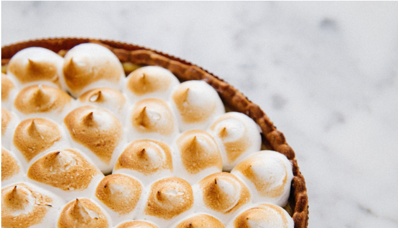

El clásico Lemon Pie
Es el preferido de los que les gusta lo dulce, pero no lo empalagoso. El Lemon pie es una tarta, es decir, una
base de masa y un relleno. Como su nombre lo indica, está hecha con jugo de limón, azúcar y huevos. Todo eso
mezclado hace el famoso custard, el relleno cremoso amarillo que es tan típico del Lemon pie.
Ingredientes
Para la masa
Para la crema
Para el merengue
Instrucciones
- Procesar o mezclar ligeramente la harina, el azúcar y la manteca fría cortada en cubitos, hasta formar un
arenado. Agregar el huevo y unir la masa sin trabajarla mucho. Envolver en film y llevar a la heladera
durante 30 minutos aproximadamente.
- Precalentar el horno a temperatura media (180°C).
- Estirar sobre una mesada enharinada y tapizar un molde para tarta desmontable de 22 cm de diámetro. Cocinar
durante 20 minutos o hasta que comience a dorarse.
- Mezclar la leche condensada con 4 yemas, 150cc de jugo de limón e integrar la ralladura Unir bien y verter
sobre la masa precocida. Cocinar en horno moderado durante 15 minutos.
- Colocar el azúcar en una cacerola pequeña y cubrir apenas con agua. Cocinar hasta obtener la textura de un
merengue italiano blando
- Unos minutos antes del punto del almíbar, comenzar a batir las claras. Cuando se empiecen a formar picos,
añadir gota a gota el almíbar caliente sin dejar de batir hasta que se enfríe.
- Decorar con el merengue y gratinar.